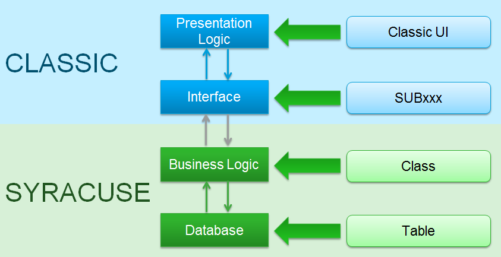
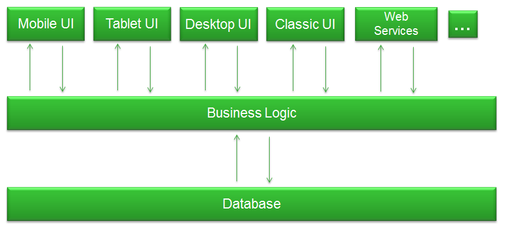
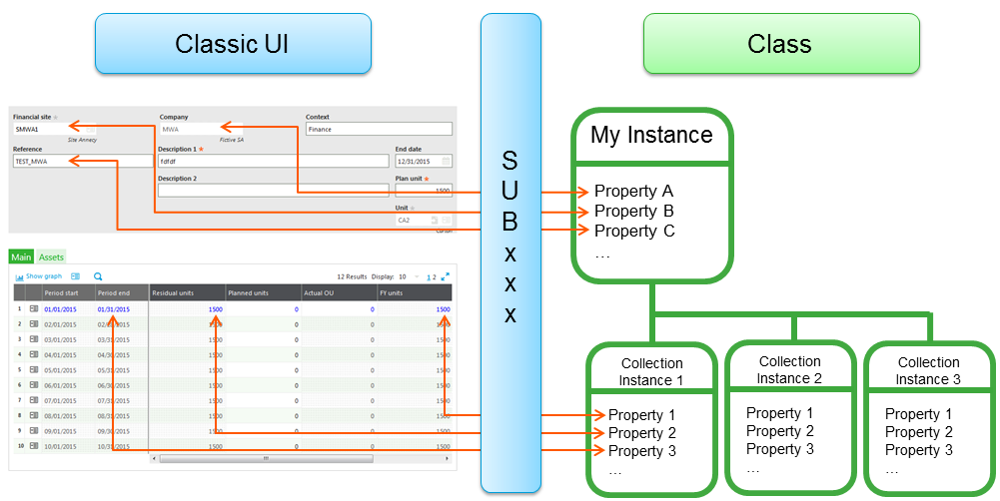

X3 Hybrid Development
This article describes the specific way of developing X3 business applications called Hybrid development. It can be used from X3 Update 9. You must be skilled in both Classic development and Syracuse development to develop hybrid features.
Before starting it is important to know that the X3 server will evolve and some of the code presented in this article will have to be rewritten. This means that any hybrid development you do will have to be refactored for future releases. Please read carefully the caution chapter, it contains important information.
Table of Contents
Presentation
What is X3 hybrid development?
Hybrid development is a Syracuse class development combined with a Classic UI development. Syracuse classes are embedded into Classic UI windows and screens (also called masks in X3). The Classic scripts attached to the screens manage exchanges between screens and classes (i.e. between screen fields and class properties) and invoke CRUD methods.
Classic windows and screens should be used in page mode and not in field mode as much as possible (no field actions if possible) because field action code will be lost when Representations will replace Classic windows.
As usual classes must guarantee the consistency of data inserted or updated in the database.

When shoud I use hybrid development?
You have new business objects to develop or you want to start SOA transformation of existing X3 objects. Use hybrid development instead of full Syracuse development for the following reasons:
- Some UI components or services you need are not yet available in Syracuse
- picking
- some graphic components (tree views, ...)
- modal windows
- attachements
- duplication
- Easier interactions with existing Classic objects
- tunnels
- Consistent UI in a business flow
The main benefit is to start developing using the Syracuse technology, even if some UI behaviors or services, mandatory for you, are not yet available in Syracuse. It avoids postponing usage of Syracuse or SOA transformation, letting teams continue to use Classic development. All work done to develop classes is an investment for the future. Classes will be directly re-usable with Representations or as Services.
Do not opposite Hybrid development and Full Syracuse development
In both cases it is a Syracuse development using classes. Adding a Classic UI is just an option you can take if needed, and you can have a Classic UI and a Syracuse UI if relevant on the same class. For example you may want a Classic UI on the desktop and a mobile representations to access the class through a mobile device.

What are the disadvantages?
The main disadvantage is that developing hybrid features means you are not developing in full Syracuse. However, it is better to develop hybrid features rather than Classic ones.
All code written to manage the Classic part will be lost. So, as much as possible, write less Classic code. Fortunately, the heart of the feature, the business part, is coded in the class and will not be lost.
Caution
Combined objects
Hybrid development is usable for objects with a header table and tables for collections. It doesn't work for "combined" objets, i.e. objects managed as header/lines objets but in a single table.
If you are developing a new feature you should use a data model with a table for the header and tables for collections because this model perfectly fits with Syracuse.
Etna server
Note, Hybrid development is a mix between Classic development and Syracuse development. Currently a single server is running both Classic and Syracuse code. In the future a new server called ETNA - development in progress - dedicated to run Syracuse code will be launched. Once ETNA is available interactions between Classic code and Syracuse code will be done through a dedicated API, so existing Classic code related to managing classes will need to be rewritten.
Learn more about ETNA and Classic code interoperability.
Let's develop some great hybrid code!
Step 1. Class development
The Class development must follow all rules of regular Syracuse development. It must be service oriented and the Class must handle all consistency controls and all business logic.
When the development is done your unit tests should be able to control the behavior of the Class for CRUD operations and Methods. Unit tests test class business logic, not representations.
Step 2. Defining Classic UI
We have to define Metada in X3 dictionaries:
- Definition of Windows and Screens
- Definition of Classic objects
- Definition of Actions
- Definition of Functions if needed
Do not develop code yet in the SUBxxx script of your screens.
Step 3. Linking Classic UI and classes
Once you have your Classic metadata and your class, you have to create a bi-directionnal link between them. It simply means that you have to write in your SUBxxx script the code to manage exchanges between the screens and the class.

You will find below what is important to add in the SUBxxx to manage exchanges with your class. Obviously only code useful for the hybrid management is presented, you can add code and use other Classic object actions depending on your needs. This first overview is completed by a header/lines management dedicated section.
Common actions
OUVRE
In this action you have to set the Supervisor ANOWRITE variable to 1 to disable the regular Classic CUD operations for the whole function (they will be handled by the class itself). Note that I wrote CUD and not CRUD, because you will still use the Classic Read operation as explained in the Read actions chapter.
ANOWRITE = 1
You may also want to open relevant tables and to declare working variables, such as an instance for your class. Please choose a meaningful and unique name for your global variable because your script may call or be called by another script through the tunnel mechanism.
Global Instance MYINSTANCE Using C_MYCLASS
Note that the instance is Global and not Local because the deletion management in the Supervisor is done through a subprogram and the instance must be known in it.
FERME
When you are leaving the transaction, you have to free the instance.
If (MYINSTANCE <> null) : FreeGroup MYINSTANCE : Endif
Kill MYINSTANCE
Read actions
The reading part is an exception in the hybrid development principles, because you will let the Supervisor read the database and directly feed screen fields instead of using the class. It is easier for the developer, as there is no need to guarantee data integrity because you are reading and not updating data.
LIENS
The Supervisor has loaded the screens from the main table, you just have to instantiate and to load the class to have it online for update and delete operations.
If (MYINSTANCE <> null) : FreeGroup MYINSTANCE : endif
MYINSTANCE = NewInstance C_MYCLASS AllocGroup null
Local Integer MY_STATUS
[L]MY_STATUS = fmet MYINSTANCE.AREAD([M:SCREEN]KEY)
If ([L]MY_STATUS >= [V]CST_AERROR)
# Error management
GMESSAGE = <a function to retrieve the most severe message error in the error stack will be available soon>
GOK = 0 : GERR = 1
Return
Endif
Creation actions
You are in the creation process. Because you are developing a hybrid feature you will replace the Classic creation by the Syracuse creation.
To create an object you have to transfer screen field values into class properties, to invoke the create method, and to refresh screen fields.
RAZCRE
You create a new instance of the class. You may have a class already instantiate for another object, so you start by freeing this instance.
If (MYINSTANCE <> null) : FreeGroup MYINSTANCE : endif
MYINSTANCE = NewInstance C_MYCLASS AllocGroup null
Then you have to initialize the class properties by calling the AINIT method and/or setting properties manually
Local Integer MY_STATUS
[L]MY_STATUS = fmet MYINSTANCE.AINIT()
If ([L]MY_STATUS >= [V]CST_AERROR)
GMESSAGE = <a function to retrieve the most severe message error in the error stack will be available soon>
GOK = 0 : GERR = 1
Return
Endif
To finish you have to refresh the UI to display the values of initialized properties. Complete the process for properties and fields with non matching name
SetInstance [M:SCREEN] With MYINSTANCE
[M:SCREEN]FIELD = MYINSTANCE.PROPERTY
Affzo [M:SCREEN]1-99
CREATION
You have to set properties from the [F] file (the [F] file has been updated by the Supervisor using values in screens before the call to CREATION) and/or from [M] screens.
You can use the instruction SetInstance which will set propertie's values from field's values for propertie's names that are identical to a field's name of the [F] file.
SetInstance MYINSTANCE With [F:FILE]
You may complete the SetInstance if needed with data from screens or file (if names are not matching) and for translatable texts (AXX type) because they are not in the table.
MYINSTANCE.PROPERTYA = [M:SCREEN]FIELD1
MYINSTANCE.PROPERTYB = [F:FILE]FIELD2
Properties have been set, it is time to invoke the creation method of the class.
Local Integer MY_STATUS
[L]MY_STATUS = fmet MYINSTANCE.AINSERT()
If ([L]MY_STATUS >= [V]CST_AERROR)
# Error management
GMESSAGE = <a function to retrieve the most severe message error in the error stack will be available soon>
GOK = 0 : GERR = 1
Return
Endif
After a successful insert, refresh the [F] file because the key may be generated in the AINSERT method.
SetInstance [F:FILE] With MYINSTANCE
Don't forget to manage errors during the insert and to set GMESSAGE, GOK and GERR as shown to retrieve the error in the Classic UI.
APRES_CRE
This action is called after a successful creation. You may have to refresh some screen fields, because some information may have been set or updated during the AINSERT method. An easy way to do that is to call the label RELIT from the GOBJSUB script, which calls the LIENS action of our script
Gosub RELIT From GOBJSUB
Update actions
The update process is quite similar to the create process: you have to transfer screen field values into class properties, to invoke the update method, and to refresh screen fields. But because the object already exist they are some differences.
INIMOD
You don't have to instantiate your class in this action: it has already be done during the reading part ($LIENS).
MODIF
As for the creation you have to set properties from the [F] file (the [F] file has been updated by the Supervisor using values in screens before the call to MODIF) and/or from [M] screens.
SetInstance MYINSTANCE With [F:FILE]
You may complete the SetInstance if needed with data from screens or file (if names are not matching) and for translatable texts (AXX type) because they are not in the table.
MYINSTANCE.PROPERTYA = [M:SCREEN]FIELD1
MYINSTANCE.PROPERTYB = [F:FILE]FIELD2
It is now time to invoke the update method.
Local Integer MY_STATUS
[L]MY_STATUS = fmet MYINSTANCE.AUPDATE()
If ([L]MY_STATUS >= [V]CST_AERROR)
# Error management
GMESSAGE = <a function to retrieve the most severe message error in the error stack will be available soon>
GOK = 0 : GERR = 1
Return
Endif
APRES_MOD
This action is called after a successful update. You may have to refresh some screen fields, because some information may have been set or updated during the AUPDATE method. An easy way to do that is to call the label RELIT from the GOBJSUB script, which calls the LIENS action of our script
Gosub RELIT From GOBJSUB
Duplication actions
The duplication is enabled by default. I remind you that to forbid the duplication you have to add the code Call VIREBOUT (CHAINE,"D") From GOBJET in the $SETBOUT label.
RAZDUP
This action is called when a field of the primary key is changed. You have to free the current instance of you class, create a new one and init it.
If (MYINSTANCE <> null) : FreeGroup MYINSTANCE : endif
MYINSTANCE = NewInstance C_MYCLASS AllocGroup null
Local Integer MY_STATUS
[L]MY_STATUS = fmet MYINSTANCE.AINIT()
If ([L]MY_STATUS >= [V]CST_AERROR)
GMESSAGE = <a function to retrieve the most severe message error in the error stack will be available soon>
GOK = 0 : GERR = 1
Return
Endif
Then you have to reset some fields in the UI depending on business rules and refresh the UI.
Raz [M:SCREEN1]
[M:SCREEN2]FIELD = DEFAULT_VALUE
Affzo [M:SCREEN1]1-99
Affzo [M:SCREEN2]FIELD
Next actions called are the same as for the creation process.
Delete actions
The deletion is very simple. You just have set ANOWRITE and to invoke the ADELETE method of your class.
AV_ANNULE
Before the deletion you have to declare and set again ANOWRITE to 1, because this part is - from a Supervisor point of view - disconnected from the rest of the process.
Local Integer ANOWRITE
ANOWRITE = 1
ANNULE
The class is supposed to be online because it has been read during the read action ($LIENS). Let's call the ADELETE method.
Local Integer MY_STATUS
[L]MY_STATUS = fmet MYINSTANCE.ADELETE()
If ([L]MY_STATUS >= [V]CST_AERROR)
# Error management
GMESSAGE = <a function to retrieve the most severe message error in the error stack will be available soon>
GOK = 0 : GERR = 1
Return
Endif
Summary
| In Classic action | You have to |
|---|---|
| OUVRE | set `ANOWRITE` to `1` declare your instance |
| LIENS | instantiate the class invoke the AREAD method |
| RAZCRE | instantiate the class initialize the class update screen fields |
| CREATION | set instance properties invoke the AINSERT method |
| APRES_CRE | update screen fields |
| MODIF | update instance properties invoke the AUPDATE method |
| APRES_MOD | update screen fields |
| RAZDUP | instantiate the class initialize the class reset some screen fields |
| AV_ANNULE | declare and set `ANOWRITE` to `1` |
| ANNULE | invoke the ADELETE method |
| FERME | free you instance |
Header / lines management
In Classic you have two options to manage a header / lines object:
Because there is no line management in the Classic Framework, managing lines by hand means that you will have to code in $LIENS, $CREATION and $UPDATE both Classic array block management and the collection creation/udpate/delete line management.
Using TABLEAUX provides Supervisor tools to help with line management, especially with what happens on a line (added, updated or deleted) when an object is modified. TABLEAUX is not recommended if you have more than one collection to manage.
You will find bellow what you need to add to your code in addition to the code seen before to manage lines depending on the option you choose.
Managing lines by hand
It is strongly recommended to manage in your screens an invisible field named AUUID typed "A" length 36 for each array block corresponding to a collection. This field will help you to match array lines and collection elements.
LIENS
You have seen that in this action the Supervisor automatically loads the screens from the main table and you invoke the AREAD method of the class to load it. The class is loaded including its collections. As for a Classic development you have to set the array blocks from the subfiles.
# Setting nolign for the transclass from [F] to [M]
nolign = 1
For [F:FILE]INDEX Where [F:FILE]KEY = [F:MAINFILE]KEY
[M:SCREEN] = [F:FILE]
nolign += 1
Next
[M:SCREEN]NBLINE = nolign - 1
Note that the tranclass automatically set screen AUUIDs from file AUUIDs.
CREATION
First you have to clean your collection. This handles the case were you got an error during a first attempt, and you fixed it before trying again. If you don't clean the collection all of lines will be duplicated in the collection.
Local Integer I
For I=1 To maxtab(MYINSTANCE.MYCOLLECTION)
If (fmet MYINSTANCE.ADELLINE("MYCOLLECTION", MYINSTANCE.MYCOLLECTION(I).AORDER) <> [V]CST_AOK)
GMESSAGE = <a function to retrieve the most severe message error in the error stack will be available soon>
GOK = 0 : GERR = 1
Return
Endif
Next
Then before invoking the AINSERT method you have to create lines in the collection from lines in the screen
Local Integer I, INDEX
For I = 0 to [M:SCREEN]NBLINE - 1
INDEX = fmet MYINSTANCE.ADDLINE("MYCOLLECTION", [V]CST_ALASTPOS)
If (INDEX = [V]CST_ANOTDEFINED)
# Error management
GMESSAGE = <a function to retrieve the most severe message error in the error stack will be available soon>
GOK = 0 : GERR = 1
Break
Endif
nolign = I + 1
# Use the SetInstance
SetInstance MYINSTANCE.MYCOLLECTION(INDEX) With [M:SCREEN]
# Complete for non matching fields and translatable fields
MYINSTANCE.MYCOLLECTION(INDEX).PROPERTY1 = [F:SUBFILE]FIELD1
MYINSTANCE.MYCOLLECTION(INDEX).PROPERTY2 = [M:SCREEN]ARRAY_FIELD1(I)
...
Next
if (GERR = 1) : Return : endif
MODIF
This may be the hardest part, because we have to detect if a line in the collection has been updated or deleted depending on the array block in the screen. As said, it is recommended to manage an AUUID as an invisible string field ("A" type, length 36) in the array block to help matching lines and collection elements (see code below). Remember you have to use the toUuid() function to convert a canonical uuid string to the uuident internal type.
Note that at the beginning of the following code, the ASTALIN for each element of the collection should always be "No changes" because nothing has been done on the class since it has been read in the $LIEN action.
Local Integer I, INDEX
For I = 0 to [M:SCREEN]NBLINE - 1
# Retrieve the element using the screen's AUUID
INDEX = find(toUuid([M:SCREEN]AUUID(I)), MYINSTANCE.MYCOLLECTION(1..maxtab(MYINSTANCE.MYCOLLECTION)).AUUID)
If (INDEX = 0)
# We did not find the element matching with the array line.
# We add a line.
INDEX = fmet MYINSTANCE.ADDLINE("MYCOLLECTION", [V]CST_ALASTPOS)
If (INDEX = [V]CST_ANOTDEFINED)
# Error management
GMESSAGE = <a function to retrieve the most severe message error in the error stack will be available soon>
GOK = 0 : GERR = 1
break
Endif
Endif
nolign = I + 1
# Use the SetInstance
SetInstance MYINSTANCE.MYCOLLECTION(INDEX) With [M:SCREEN]
# Complete for non matching fields and translatable fields
MYINSTANCE.MYCOLLECTION(INDEX).PROPERTY1 = [F:SUBFILE]FIELD1
MYINSTANCE.MYCOLLECTION(INDEX).PROPERTY2 = [M:SCREEN]ARRAY_FIELD1(I)
...
Next
if (GERR = 1) : Return : endif
# Now, all elements that don't have the status Updated or Created must be deleted, because it means they don't match with lines in the array
For I = 1 to maxtab(MYINSTANCE.MYCOLLECTION)
If !(find(MYINSTANCE.MYCOLLECTION(I).ASTALIN, [V]CST_ANEW, [V]CST_AUPD)
If (fmet MYINSTANCE.ADELLINE("MYCOLLECTION", MYINSTANCE.MYCOLLECTION(I).AORDER) <> [V]CST_AOK)
# Error management
GMESSAGE = <a function to retrieve the most severe message error in the error stack will be available soon>
GOK = 0 : GERR = 1
Break
Endif
Endif
Next
if (GERR = 1) : Return : endif
ANNULE
Invoking the ADELETE method as seen before is enough, it will manage the deletion of lines in the collection.
Using the TABLEAUX script
TABLEAUX is not recommended if you have more than one collection to manage.
You have to add some code in your actions, based on the TABLEAUX script which manages the line level in a Classic header / lines object.
When a gosub is done to TABLEAUX, you will get a callback for each line processed. It is very useful to manage in the callback your collection lines during CRUD operations.
OUVRE
Gosub DECLARE From TABLEAUX
A callback named "DEFLIG" is done on your script. It is used to declare the name of the line table and some criteria. Nothing to do for your hybrid management.
LIENS
Gosub LIENS From TABLEAUX
A callback named "LIENS_LIG" is done on your script. For example, you may want to add code to read extra data and feed some properties in each line of your collection.
CREATION
Before calling CREATION from the TABLEAUX script you have to clean your collection. It's in case you've tried to save, you've got an error, you've fixed the error and you save again. If you don't clean the collection all of lines will be duplicated in the collection.
Local Integer I
For I=1 To maxtab(MYINSTANCE.MYCOLLECTION)
If (fmet MYINSTANCE.ADELLINE("MYCOLLECTION", MYINSTANCE.MYCOLLECTION(I).AORDER) <> [V]CST_AOK)
GMESSAGE = <a function to retrieve the most severe message error in the error stack will be available soon>
GOK = 0 : GERR = 1
Return
Endif
Next
Gosub CREATION From TABLEAUX
A first callback named INICRE_LIG is done on your script. Nothing to do for your hybrid management. Then a callback named VALLIG with TRTLIG="C" is done, the mechanism is explained just below in the MODIF chapter.
MODIF
You have to call MODIF from TABLEAUX.
Gosub MODIF From TABLEAUX
A callback named VALLIG is done on your script. It is a very important callback because you will manage addition, deletion and update in your collection in this action.
$VALLIG
Case TRTLIG
When "C" : Gosub VALLIG_CRE
When "M" : Gosub VALLIG_UPD
When "A" : Gosub VALLIG_DEL
Endcase
Return
The "C" code means that the line has been added in the block. You have to create a element in the collection.
$VALLIG_CRE
…
Gosub INS_LINE_COLLECTION
…
Return
$INS_LINE_COLLECTION
Local Integer INDEX
INDEX = fmet MYINSTANCE.ADDLINE("MYCOLLECTION", [V]CST_ALASTPOS)
If (INDEX = [V]CST_ANOTDEFINED)
# Error management
GMESSAGE = <a function to retrieve the most severe message error in the error stack will be available soon>
GOK = 0 : GERR = 1
Return
Endif
# nolign has already been set to the array line number
# Use the SetInstance
SetInstance MYINSTANCE.MYCOLLECTION(INDEX) With [M:SCREEN]
# Complete for non matching fields and translatable fields
MYINSTANCE.MYCOLLECTION(INDEX).PROPERTY1 = [F:SUBFILE]FIELD1
MYINSTANCE.MYCOLLECTION(INDEX).PROPERTY2 = [M:SCREEN]ARRAY_FIELD1(nolign-1)
...
Return
The "M" code means that the line has been modified. There is a "two passes" mechanism but we only need one of them. That's why we process the update only when SIGN = -1. We have to retrieve the matching element in the collection to update it. Note that the [F] line file has been automatically loaded by TABLEAUX script.
$VALLIG_UPD
If SIGN = -1
…
Gosub UPD_LINE_COLLECTION
…
Endif
If SIGN = +1
…
Endif
Return
$UPD_LINE_COLLECTION
Local Integer INDEX
# The [F] file is loaded, the AUUID contains the unique reference to this record
INDEX = find([F:COL_FILE]AUUID, MYINSTANCE.MYCOLLECTION(1..maxtab(MYINSTANCE.MYCOLLECTION)).AUUID)
If (INDEX > 0)
# nolign has already been set to the array line number
# Use the SetInstance
SetInstance MYINSTANCE.MYCOLLECTION(INDEX) With [M:SCREEN]
# Complete for non matching fields and translatable fields
MYINSTANCE.MYCOLLECTION(INDEX).PROPERTY1 = [F:SUBFILE]FIELD1
MYINSTANCE.MYCOLLECTION(INDEX).PROPERTY2 = [M:SCREEN]ARRAY_FIELD1(nolign-1)
...
Endif
Return
The "A" code means that the line has been deleted. We have to delete the matching element. Because this callback is also done when the whole object is deleted, we have to test that GREP <> "A" before processing. It is useless to manage a line by line deletion when we will delete the whole object (see $ANNULE below).
$VALLIG_DEL
…
if (GREP <> "A")
# We are not in the complete object deletion
Gosub DEL_LINE_COLLECTION
Endif
…
Return
$DEL_LINE_COLLECTION
Local Integer INDEX
INDEX = find([F:COL_FILE]AUUID, MYINSTANCE.MYCOLLECTION(1..maxtab(MYINSTANCE.MYCOLLECTION)).AUUID)
If (INDEX > 0)
If (fmet MYINSTANCE.ADELLINE("MYCOLLECTION", MYINSTANCE.MYCOLLECTION(INDEX).AORDER) <> [V]CST_AOK)
# Error management
GMESSAGE = <a function to retrieve the most severe message error in the error stack will be available soon>
GOK = 0 : GERR = 1
Endif
Endif
Return
ANNULE
Gosub ANNULE From TABLEAUX
A callback named "VALLIG" is done on your script. But as explained above in $MODIF nothing will be done in the collection because of the case GREP = "A". The deletion of the header will delete automatically the collection. You don't have to delete each element of the collection.
Miscelleanous
Translatable texts
Translatable texts are not stored in the table linked to the class but in the ATEXTRA table. When you use a Setinstance this kind of field is not managed, you have to add code like:
SetInstance MYCLASS with [M:SCREEN]
MYCLASS.TRAD_FIELD = [M:SCREEN]TRAD_FIELD
CLOB / BLOB
CLOB and BLOB may not be stored in the table linked to the class but in a dedicated table (which is recommended). In this case when you use a SetInstance this kinds of field are not managed, you have to add code like:
SetInstance MYCLASS with [M:SCREEN]
MYCLASS.MYCLOB = [M:SCREEN]MYCLOB
Real Life Example
Of course, all of this article is a high level description of hybrid development. Real life is much more complex. Luckily, since Update 9, you can have a look at a real working hybrid developments.
Freight container, since Update 9
It is an interesting example because the container object has a header/lines datamodel and is managed by a class with a collection using the Supervisor TABLEAUX script.
- OCTRH, CTRH, CTRH1, CTRH2: the Classic window and screens to let the user interact with the Container object
- SUBCTRH, SUBCTRHA: scripts managing Classic object actions and the link between Classic windows and screens
- CONTAINER: class for the Container object with all of consistency controls and business rules and methods
- CONTAINER_CSTD, CONTAINER_CMET: main script and method script managing the Container class
Project (CRM), since Version 11
This example shows an header/lines object management using the "line management by hand" method.
- OOPP, OPP0 to OPP5: the Classic window and screens to let the user interact with the Project object
- SUBOPP, SUBOPPA, SUBOPPB: scripts managing Classic object actions and the link between Classic windows and screens
- OPPOR*: class and collections for the Project object
- OPPOR_STD; OPPOR_CSTD_METHODS: main script and method script managing the Project class